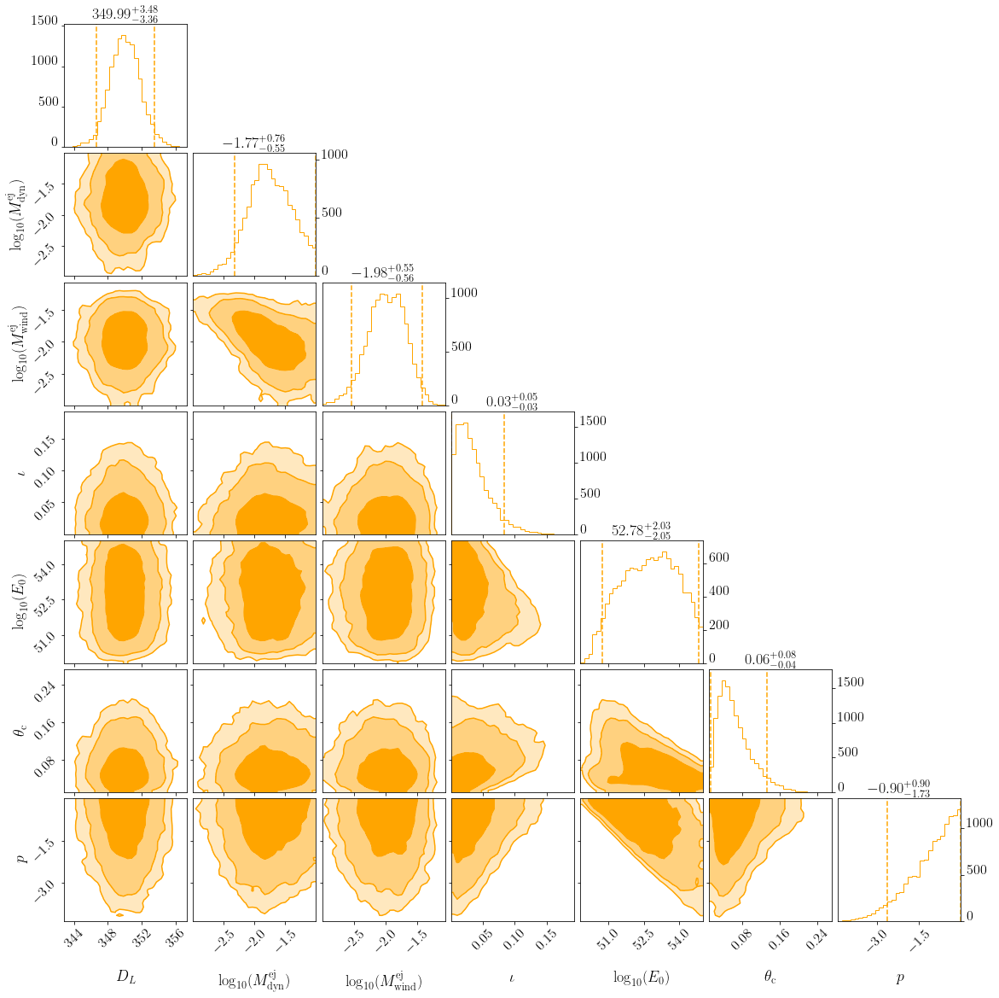

Inference of electromagnetic signals#
Given a light curve from an optical survey telescope (and potential follow-up), the goal is to analyze the light curve to perform parameter inference. Within NMMA, there are a number of models available. Some are analytic / semi-analytic models that can be sampled, others rely on sampling from a grid of modeled lightcurves through the use of Principle Component Analysis (PCA) and an interpolation scheme (either Gaussian process modeling or neural networks).
In many cases, the lightcurve predicted by each set of parameters is extremely high-dimensional, given the number of measurements made. Our goal for this example is to to determine the best-fit model parameters for an object based on its observed lightcurve.
Example fit to simulated data#
Following the quick start, we assume that an injection file has been made generated and made available. For example, there are a number of extra parameters available to modify the light curve sampling, including:
If one is interested in realistic ZTF-like light curves, one should use:
–ztf-sampling: Uses a gaussian KDE to simulate ZTF pointing set for ZTF-II in g and r, and private/partnernship in i
–ztf-uncertainties: Simulates magnitude uncertainties using skew normal fits to forced photometry uncertainties in mag_bins=[12,18,20,21,23]
–ztf-ToO: Adds realistic ToO pointings during the first one or two days (1/2 randomly chosen) for specified exposure times: either 180s (valid for skymaps <1000sq deg) or 300s (skymaps >1000sq deg). Has no effect if –ztf-sampling is not turned on.
If instead one is interested in potential Rubin-like ToO light curves, one should use:
–rubin-ToO: Adds ToO obeservations based on the strategy presented in arxiv.org/abs/2111.01945.
–rubin-ToO-type: Type of ToO observation. Has no effect if –rubin-ToO is not turned on.
One may also be interested in a custom strategy. For this, one can use the flags:
–photometry-augmentation: A flag to augment photometry to improve parameter recovery
–photometry-augmentation-seed: Set a seed for the augmentation
There are a few different forms this may take, for example, specifying:
–optimal-augmentation-filters: Provide a comma seperated list of filters to use for augmentation (e.g. ztfg,ztfr,ztfi). If none is provided, will use all the filters available. with
–photometry-augmentation-N-points: Specify the number of augmented points to include taken randomly from –optimal-augmentation-filters
However, if you specify:
–optimal-augmentation-times: Provide a comma seperated list of times to use for augmentation in days post trigger time (e.g. 0.1,0.3,0.5). If none is provided, will use random times between tmin and tmax). You can choose the times to simulate for a given filter.
We can use these flags as follows.
Taking ZTF as an example:
lightcurve-analysis --model Bu2019lm --svd-path ./svdmodels --outdir outdir --label injection --prior priors/Bu2019lm.prior --tmin 0.1 --tmax 20 --dt 0.5 --error-budget 1 --nlive 512 --Ebv-max 0 --injection ./injection.json --injection-num 0 --injection-outfile outdir/lc.csv --generation-seed 42 --filters ztfg,ztfr,ztfi --plot --remove-nondetections --ztf-uncertainties --ztf-sampling --ztf-ToO 180
This produces a light curve and parameter inference of the form:


Taking Rubin as an example:
lightcurve-analysis --model Bu2019lm --svd-path ./svdmodels --outdir outdir --label injection --prior priors/Bu2019lm.prior --tmin 0.05 --tmax 20 --dt 0.1 --error-budget 1 --nlive 512 --Ebv-max 0 --injection ./injection.json --injection-num 0 --injection-outfile outdir/lc.csv --generation-seed 42 --filters sdssu,ps1__g,ps1__r,ps1__i,ps1__z,ps1__y --plot --remove-nondetections --rubin-ToO --rubin-ToO-type BNS --injection-detection-limit 23.9,25.0,24.7,24.0,23.3,22.1
Analysis of a real object#
Of course, analysis of simulated objects are not the ultimate goal for the analysis. However, we can also analyze real light curves. We take as an example one of the files in example_files/candidate_data/ (ZTF21abjvfbc.dat) and run:
lightcurve-analysis --model Bu2019lm --svd-path ./svdmodels --interpolation-type tensorflow --outdir outdir --label injection --prior priors/Bu2019lm.prior --tmin 0.1 --tmax 20 --dt 0.5 --error-budget 1 --nlive 512 --Ebv-max 0 --trigger-time 59397.28347219899 --data example_files/candidate_data/ZTF21abjvfbc.dat --plot
One might note that the –trigger-time is set specifically here in MJD, taken in this example to be the first detection of the object.
This produces a light curve and parameter inference of the form:


Inference of multiple EM signals#
Whereas the examples above dealt with stand-alone Bayesian inferences of just one model or astrophysical source, NMMA enables to run a combined inference using multiple models. Below, we show examples for 2 different types of sources:
Binary Neutron Star (BNS)
Neutron-Star-Black-Hole (NSBH)
Here, we use the observed GRB211211A signal as a case study to run Bayesian inference with multiple models. In principle, this sort of signal can originate from a BNS source, but also a NSBH source could be explain the observed signature.
Example: BNS source
If we assume a BNS source, we can use the model TrPi2018 for modelling Gamma-ray burst afterglows along with the kilonova model Bu2019lm. To run a joint inference with these 2 models, we use the observed data GRB211211A.txt, an adapted prior file which includes prior settings for both models and the model grid for the Bu2019lm kilonova model. The joint inference can be started using the command:
mpiexec -np 16 lightcurve-analysis --model Bu2019lm,TrPi2018 --svd-path /nmma/svdmodels/ --interpolation-type sklearn_gp --outdir outdir --label GRB211211A --prior ./Bu2019lm_TrPi2018GRB211211A.prior --tmin 0.01 --tmax 10 --dt 0.01 --error-budget 1 --nlive 1024 --Ebv-max 0 --trigger-time 59559.54791666667 --data ./GRB211211A.txt --plot
The joint Bayesian inference using both model yields posterior samples for the source parameters describing the kilonova and GRB afterglow. Some of the source parameter posteriors are shown below.

Example: NSBH source
For the assumption that also a NSBH source could produce a signal such as GRB211211A, we use a NSBH-kilonova model Bu2019nsbh and again the model TrPi2018 for modelling gamma-ray burst afterglows. We use the same observational data and adapt the prior setting for the Bu2019nsbh model. To run tje joint inference with these 2 models, run the command:
mpiexec -np 16 lightcurve-analysis --model Bu2019nsbh,TrPi2018 --svd-path /nmma/svdmodels/ --interpolation-type sklearn_gp --outdir outdir --label GRB211211A_NSBH --prior ./Bu2019nsbh_TrPi2018_GRB211211A.prior --tmin 0.01 --tmax 10 --dt 0.01 --error-budget 1 --nlive 1024 --Ebv-max 0 --trigger-time 59559.54791666667 --data ./GRB211211A.txt --plot